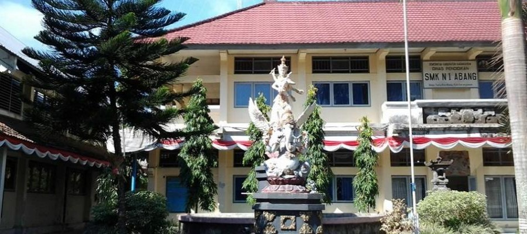
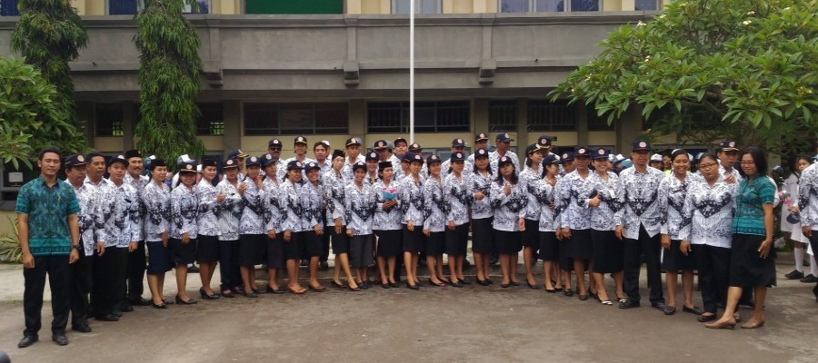

SMK Negeri 1 Abang
SMK Negeri 1 Abang

Om Swastiastu, Kami mengucapkan selamat datang di Website kami Sekolah Menengah Kejuruan Negeri (SMKN) 1 Abang yang saya tujukan untuk seluruh unsur pimpinan, guru, karyawan dan siswa masyarakat guna dapat mengakses seluruh informasi tentang segala profil, aktivitas/kegiatan serta fasilitas sekolah kami. Kami selaku pimpinan sekolah mengucapkan terima kasih kepada tim pembuat Website ini yang telah berusaha untuk dapat lebih memperkenalkan segala perihal yang dimiliki oleh sekolah. Dan tentunya Website sekolah kami masih terdapat banyak kekurangan, oleh karena itu kepada seluruh civitas akademika dan masyarakat umum dapat memberikan saran dan kritik yang membangun demi kemajuan Website ini lebih lanjut. Saya berharap Website ini dapat dijadikan sarana interaksi yang positif baik antar warga sekolah maupun masyarakat pada umumnya sehingga sehingga informasi dapat tersampaikan dengan baik. Semoga Tuhan Yang Maha Esa memberikan kekuatan bagi kita semua untuk mencerdaskan anak-anak bangsa. Om Santih, Santih, Santih Om I Wayan Laba, S.Pd., M.Pd.

KUOTA PENERIMAAN PESERTA DIDIK SMK NEGERI 1 ABANG NOJURUSANKUOTAZONASI 10%AFIRMASI & INKLUSI 30%PRESTASI AKADEMIK 5%PRESTASI NON AKADEMIK 5%PRESTASI SENI BUDAYA... Baca Selengkapnya
Bagi Calon Peserta Didik Baru yang telah lulus seleksi PPDB pada Tahap I, Tahap II, dan Tahap III agar... Baca Selengkapnya
Alur Pendaftaran Penerimaan Peserta Didik Baru SMK Negeri 1 Abang Tahun 2021 https://youtu.be/FhrhivEmSbk Video Tutorial Pendaftaran PPDB Tahun 2021:Jalur Afirmasi... Baca Selengkapnya